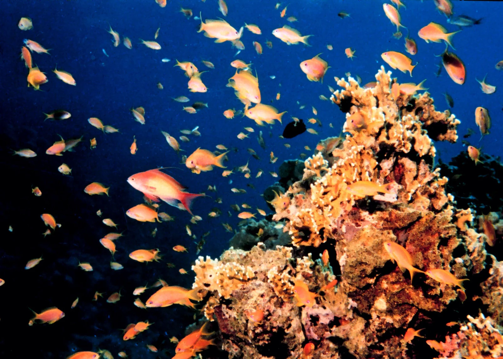

Aqaba
Jordanie · plongée, snorkeling

Récifs coralliens de la mer Rouge au bord du désert, avec épaves et jardins de corail accessibles du rivage.
- Lieu
- Jordanie
- Niveau
- Débutant
- Activités
- plongée, snorkeling
- Type d'eau
- Mer / océan
- Coordonnées
- 29.45, 34.97 (position approximative du secteur)
Dangers à connaître
- Corail protégé.
- Chaleur extrême l’été.
Le conseil d'Ocean Buddy
Plonge sur l’épave du Cedar Pride, accessible depuis la plage.
Ouvrir dans Ocean Buddy Télécharger sur l'App Store
Source : Fiche Ocean Buddy · septembre 2026 · à vérifier localement.